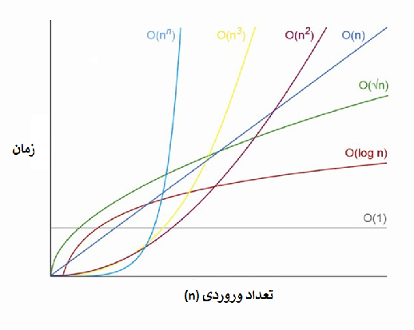

رشد توابع¶
در تحلیل الگوریتمها (زمانی و فضایی)، همواره رفتار توابع را در بینهایت بررسی میکنیم. ممکن است الگوریتمی که ارائه میشود برای ورودیهای کوچک سرعت اجرای بسیار خوبی داشته باشد، اما با رشد ورودی، رشد تابع زمان اجرا بسیار زیاد باشد. یعنی در بینهایت مقدار تابع زمان اجرا، به شدت افزایش یابد. مقولهای که در طراحی الگوریتم برای ما اهمیت دارد، رشد توابع است. به همین دلیل است که رفتار تابع زمان اجرا به شکل حدی و در بینهایت بررسی میشود. از دید الگوریتمی، تمامی الگوریتمهایی که رو مقادیر ثابت بحث میکنند (یعنی مانند کد اول ما، زمان اجرای آنها تابعی از یک متغیر نیست و مقدار ثابتی دارد) زمان اجرای برابری دارند و هیچکدام بر دیگری برتری ندارند. البته، زمان اجرای تمامی آنها از الگوریتمهایی که تابع زمان اجرای آنها، تابعی از ورودی است کمتر است و از نظر پیچیدگی زمانی بهتر هستند. پیچیدگی زمانی، همان زمان اجرای یک الگوریتم و پیچیدگی فضایی (یا پیچیدگی مکانی) همان فضای مصرفی یک الگوریتم است.
با بررسی رفتار حدی میتوان متوجه شد که مقادیر ثابت توابع، در رشد تابع اثر گذار نیستند. در واقع، بزرگترین جمله تابع تنها جملهای است که باید در مقایسه لحاظ شود. حتی ضرایب ثابت بزرگترین جمله تابع هم در رشد تابع بیاثر هستند. در زیر پیچیدگیهای زمانی الگوریتمهای فرضی مختلف را به همراه جمله مؤثرشان آوردیم تا این موضوع روشنتر شود.
$$T_{1}{(n)} = t_{ساخت range} + n \times (t_{انتساب}+t_{print}) \approx n \times (t_{انتساب}+t_{print}) \approx n$$
$$T_{2}{(n)} = c_1 \times n^2 + 100 \approx c_1 \times n^2 \approx n^2$$
$$T_{3}{(n)} = 999999 \times n^2 + 999999 \times n \approx c_1 \times 999999 n^2 \approx n^2$$
$$T_{4}{(n)} = c_1 \times n + c_2 \times n \log{n} + 50 \times t_{انتساب} \approx c_2 \times n \log{n} \approx n \log{n}$$
میتوان دید که از دید تحلیل و طراحی الگوریتمها، گرچه دو تابع \( T_{2} \) و \( T_{3} \) با هم برابر نیستند اما رشد برابری دارند و یکسان در نظر گرفته میشوند. حال، با توجه به حرفهایی که در این بخش زده شد، میتوان گفت که کد اولی که در ابتدای بحث نوشته بودیم، از کد دوم سریعتر است. گرچه مقایسه این دو کد بیمعنا است. چون اهداف هرچند مشابه، اما متفاوتی دارند. در زیر تصویری از مقایسه رشد توابع مختلف قرار داده شده است. با «نماد O» در بخش بعدی بیشتر آشنا خواهید شد.

در بخش بعدی، نمادهایی را به شکل رسمی تعریف میکنیم تا بتوانیم حرفهایی که برای تحلیل الگوریتمها زدیم را در قالب ریاضیات و توابع ریاضی بیان کنیم. بیان ریاضی کمک میکند تا در تعاریف خود محکم و دقیق باشیم و بنیان تعاریف خود را بر پایههای استوار ریاضیات قرار دهیم.
مهم
مقایسه، تحلیلها و نمادهایی که برای پیچیدگی زمانی الگوریتمها بیان میشوند، بر روی پیچیدگی فضایی الگوریتمها نیز، قابل اعمال و تعریف هستند.